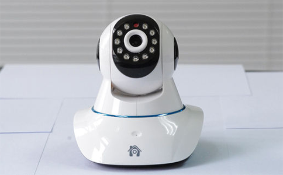

曾几何时，智能硬件性能的提升和整体价格的下降总会引起新一轮销售风暴，但现如今随着用户对体验和服务的要求越来越高，传统IPC（网络摄像机）厂商单纯依靠增加硬件功能或者降低价格来获取生存空间的路子将会越来越窄，如果不能转变思路，紧跟时代步伐，创新发展理念，这些传统厂商最终将无法逃脱倒闭或者沦为品牌公司代工厂的命运。要想持续增长，就需要重新审视自己，把握行业发展趋势，充分利用互联网技术和平台，不断补充完善产品的体验服务，并像一个互联网公司一样重新定义和打造产业的结构和形态。
近年来，随着互联网、智能手机的普及和网络带宽的提升，IPC（网络摄像机）在家用市场上得到了迅猛的发展，前两年只在影视剧中出现的看上去很“高大上”的高科技产品现在已经逐渐飞入寻常百姓家了，不得不让人叹服科技的发展速度对人类生活的影响。
不过，IPC（网络摄像机）市场繁荣的背后也存在着隐忧：随着市场需求的引爆，大量的厂商和资金开始涌入这个行业，这势必会引起惨烈的价格战。据行业相关人士透露，目前，很多IPC（网络摄像机）厂商的利润被压得越来越低，一台摄像机的利润仅维持在5-10元，还要承受退货带来的风险。
但价格战的产生也是传统厂商的一种无奈的选择，很多IPC（网络摄像机）厂商由于研发能力不足，产品创新能力缺乏，产品同质化严重，除了价格战外没有别的办法，寄望这种“杀敌一千，自伤八百”的办法来度过严寒的冬天。
与此景象形成鲜明对比的是，近年来，一些互联网巨头和传统龙头厂商如360、小米、海康萤石等相继推出了新一代的IPC（网络摄像机）明星产品，受到了大批消费者的青睐，大有垄断智能家用市场的趋势。
这些产品的成功很大程度上是由于这些公司强大的软硬件技术能力，在软硬件设计和操作上都提供了更加完美的用户体验，在运营方式上也与传统厂商差别甚大。传统硬件厂商基本上是靠销售硬件产品获得一次性利润，软件服务的缺失使得他们只能靠不断降低价格来获得属于自己的市场优势，而360、小米、海康萤石等厂商则并不仅仅通过硬件获取利润，而是通过持续改善用户体验，使用户长期留存下来，进而在“云存储”等增值项目上获得长期收益。用户体验的不断改善反过来也会促进产品品牌价值的提升，让用户产生品牌依赖性，从而使硬件产品获得更大的溢价空间。
互联网时代是用户至上的时代，一款产品如果仅仅从功能角度出发，而不关注用户与产品是否产生了深度交互，用户在使用过程中是否获得了成就感和愉悦感，那么这款产品注定是会被淘汰的。新的发展趋势是IPC（网络摄像机）厂商不仅仅需要一款好的产品，还需要有一个新的平台，在这个平台为产品提供价值。由于任何硬件都是固定的，不可再生的，很难去升级、迭代。这时候就需要一个软件的平台，把它的功能、特性、未来的空间不断地上升。硬件是进攻之矛，用于打开市场，然后利用软件的优势来把用户累积下来，这一平台会成为IPC（网络摄像机）未来的主要竞争点。
要做到这些不仅需要精湛的硬件开发和生产能力，更重要的是后续的软件服务与产品持续运营的能力。传统IPC厂商的优势在于硬件，想实现硬件、软件之间互联互通，优势互补，打造一个可运营的新平台，寻找软件解决方案商合作开发是一种较好的选择。
众云视频根据市场调研到的数据，结合多年的技术研发和经验积累，整合公司的研发力量，为传统IPC（网络摄像机）厂商开发了一套完整可靠的技术解决方案，可根据不同厂商提供专业定制的一站式服务，致力于帮助传统IPC（网络摄像机）厂商互联网转型，共同迎接崭新的未来。
原创文章转载请注明：www.zvcloud.com